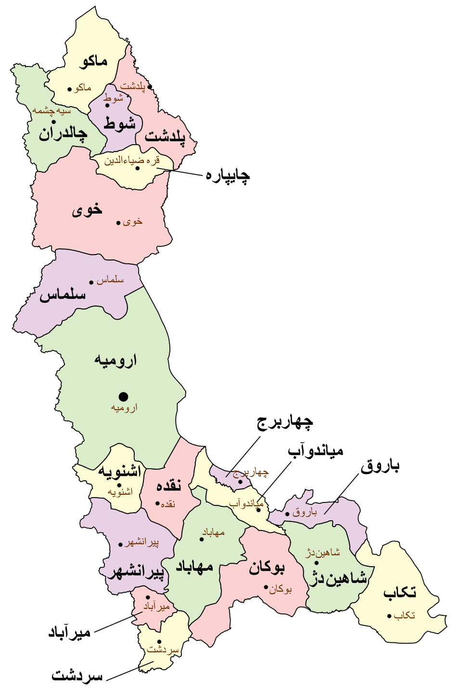
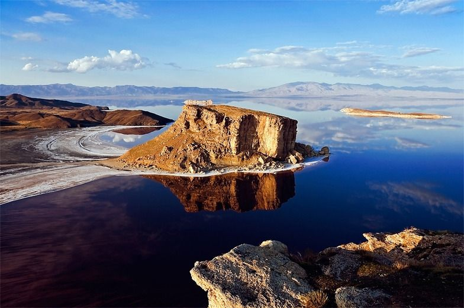
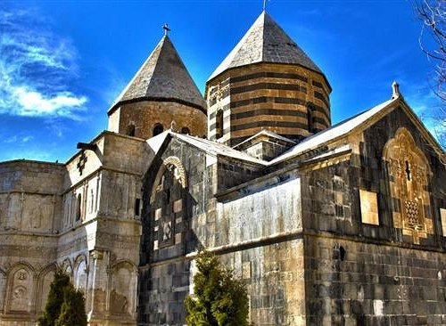
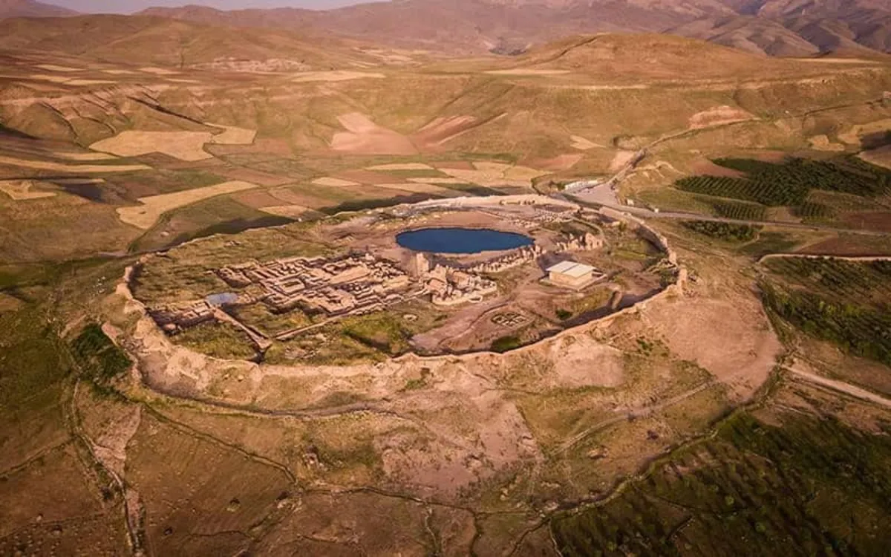
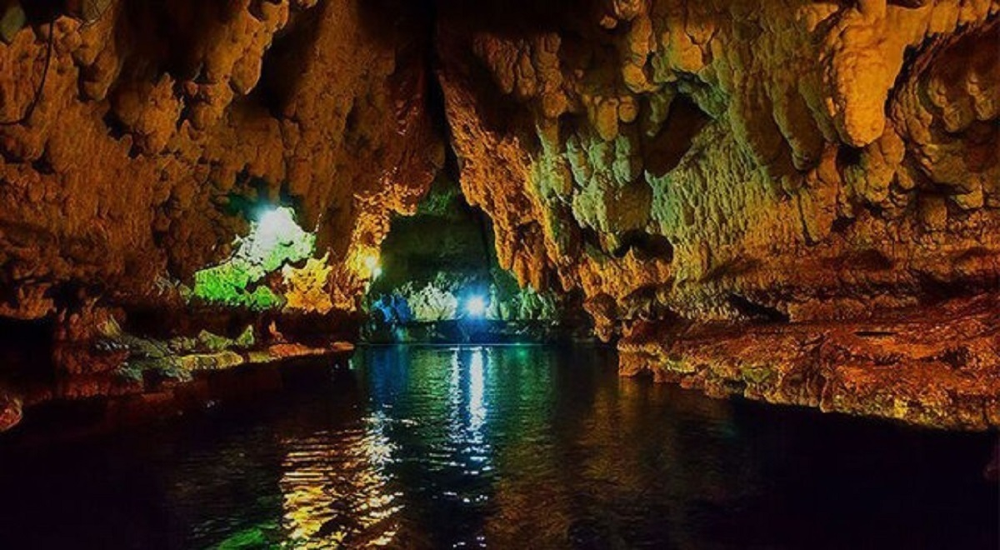

دریاچه ارومیه، قلعههای اورارتویی و میراث چندفرهنگی شمالغرب ایران
ارومیه
۳۷٬۴۳۷ کیلومتر مربع
≈ ۳٫۴–۳٫۵ میلیون نفر
سرزمین اورارتو
آذربایجان غربی مهد تمدن اورارتو (حدود ۸۰۰–۶۰۰ ق.م) است. قلعه بسطام، بزرگترین دژ اورارتویی ایران، و آثار باستانی دیگر نشاندهنده قدمت این منطقه است. این استان با هممرزی با ترکیه، عراق و آذربایجان، همیشه محل تلاقی فرهنگها و تمدنها بوده و امروزه نیز تنوع قومی (آذری، کرد، آشوری، ارمنی) را در خود جای داده است.

نمایش ارومیه روی نقشهدریاچه ارومیه، بزرگترین دریاچه آب شور ایران و یکی از جاذبههای طبیعی منحصربهفرد جهان، قلب تپنده استان است. استان با تنوع اقلیمی (کوهستانی شمال و دشتهای جنوبی)، غار سهولان، چشمههای آب گرم و روستاهای تاریخی، مقصدی عالی برای طبیعتگردی و گردشگری است.

از قرهکلیسا (قدیمیترین کلیسای جهان)، تخت سلیمان (میراث جهانی یونسکو)، غار سهولان تا روستاهای تاریخی و صنایع دستی محلی؛ آذربایجان غربی ترکیبی از تاریخ، مذهب و طبیعت است.

قرهکلیسا
تخت سلیمان
غار سهولاناز بزرگترین دریاچههای شور جهان، ثبتشدهی رامسر و ذخیرهگاه زیستکره؛ سطح آب آن در دهههای اخیر کم شده است.
مجموعهی آتشکدهی ساسانی آذرگشنسب در تکاب؛ ثبت جهانی ۲۰۰۳.
صومعهی سن تادئوس در ماکو، بخشی از ثبت جهانی صومعههای ارمنی؛ ۲۰۰۸.
شهر صخرهای که خانهها زیر دیوارهٔ سنگی ساخته شدهاند.
یادگار دوران اورارتویی، نزدیک شهر ماکو.
سیب و انگور ارومیه در اطراف شهر و دامنهی کوهها.
استان زیستگاه اقوام کرد، آذری، ارمنی، آشوری و … است؛ از همین رو آشپزی و موسیقی آن بسیار متنوع است.